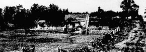

Week 6 Handout: Gettysburg, Day 1 | ||||||
8:00 a.m.: Archer and Davis of Heth's division begin advance on Gettysburg 10:00 a.m.: Reynolds killed by Confederate marksman, succeeded by Reynolds 11:00 a.m.: Meredith's Iron Brigade turns back Archer's troops, Archer taken prisoner Noon: XI Corps under Schurz arrives Noon: Confederate artillery fires on Union lines from Oak Hill 2:00 p.m.: Rodes advances on the Union right 2:30 p.m.: Lee arrives on Herr Ridge to survey the battlefield 2:30 p.m.: Schurz's division crumbles under Early's attack 2:30 p.m.: Lee sends in Heth and Pender, Heth wounded 3:30 p.m.: Under Early's onslaught, Schurz's line flees south into Gettysburg 4:00 p.m.: Pender's troops force Union retreat to Gettysburg and Cemetery Hill 4:00 p.m.: Hancock arrives on Cemetery Hill 4:30 p.m.: Union retreats to Cemetery Hill and begins entrenching 4:30 p.m.: Lee gives Ewell discretionary orders to attack Cemetery Hill; Ewell declines 6:00 p.m.: Sickles' corps arrives
7:00 p.m.: Hancock leaves for Taneytown to summon reinforcements |
||||||
| ||||||
|

| ||||||
|
| ||||||
|
Gettysburg: Day 2 Gettysburg: Day 3 Quotes on the Battle of Gettysburg The Gettysburg Address |